01
Horarios en hora de Argentina (GMT-3)
Día Mundial Metropolitano · Jujuy 2026
San Salvador de Jujuy y Palpalá serán sede de dos jornadas de encuentro, intercambio y trabajo en común, junto a otras experiencias de nuestro país, para seguir pensando el presente y futuro de nuestras regiones.
El encuentro analiza los avances en gobernanza e institucionalidad metropolitana y distintas soluciones metropolitanas impulsadas en diversas áreas de Argentina.
Conocé más sobre el World Metropolitan Day en worldmetropolitanday.org
Horarios en hora de Argentina (GMT-3)
Sedes
Organizan
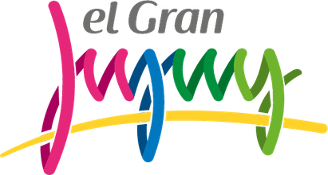
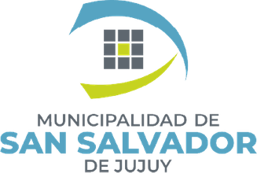
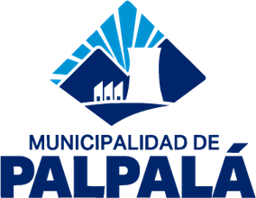
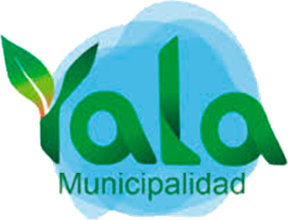
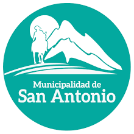
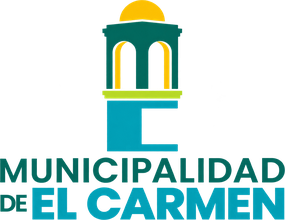
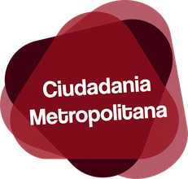
Instituciones que acompañan
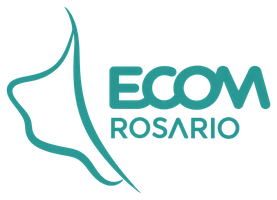
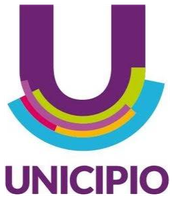
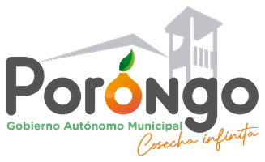
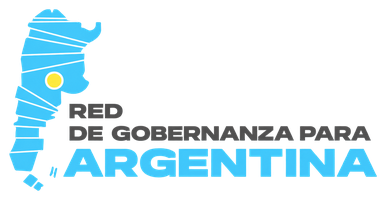
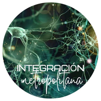
Instituciones que apoyan
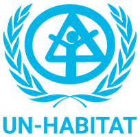